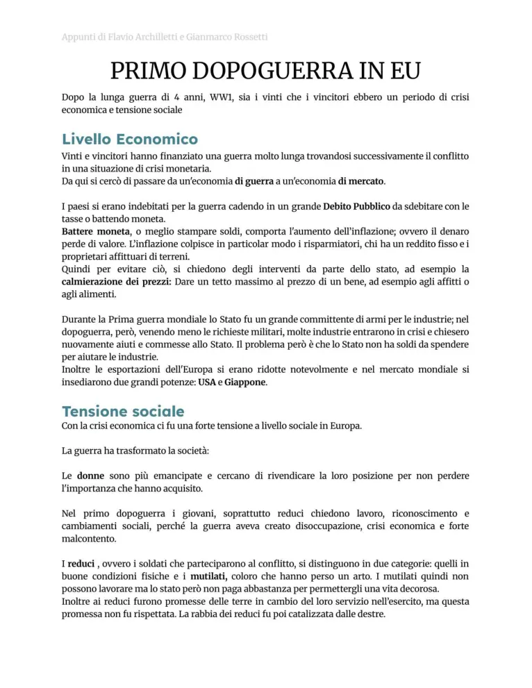
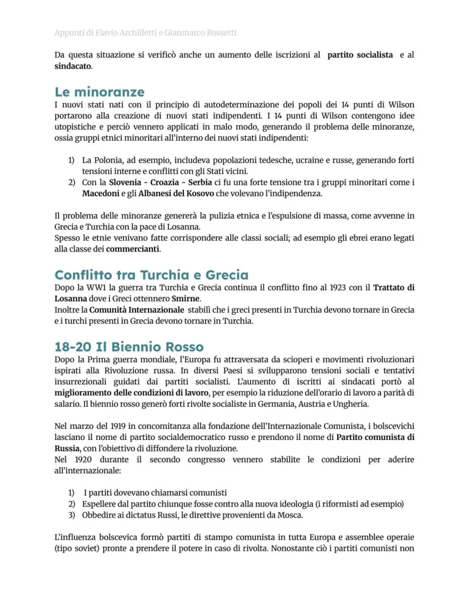
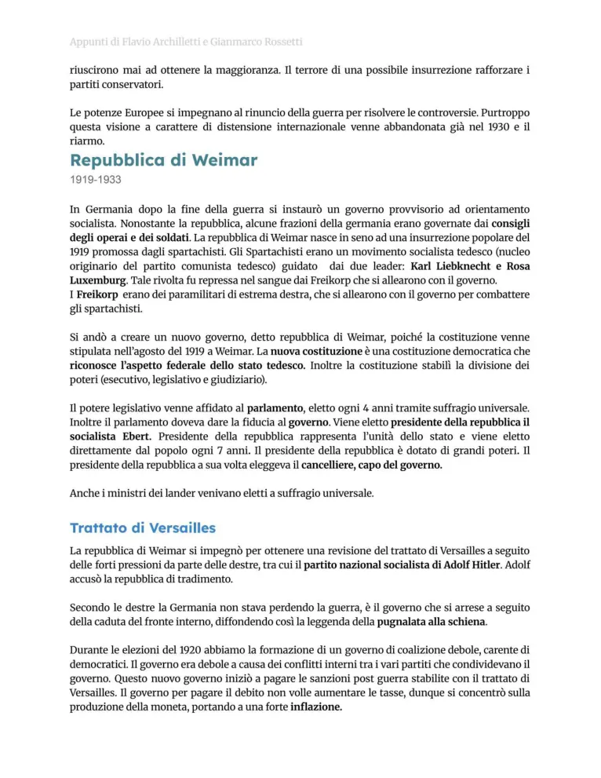
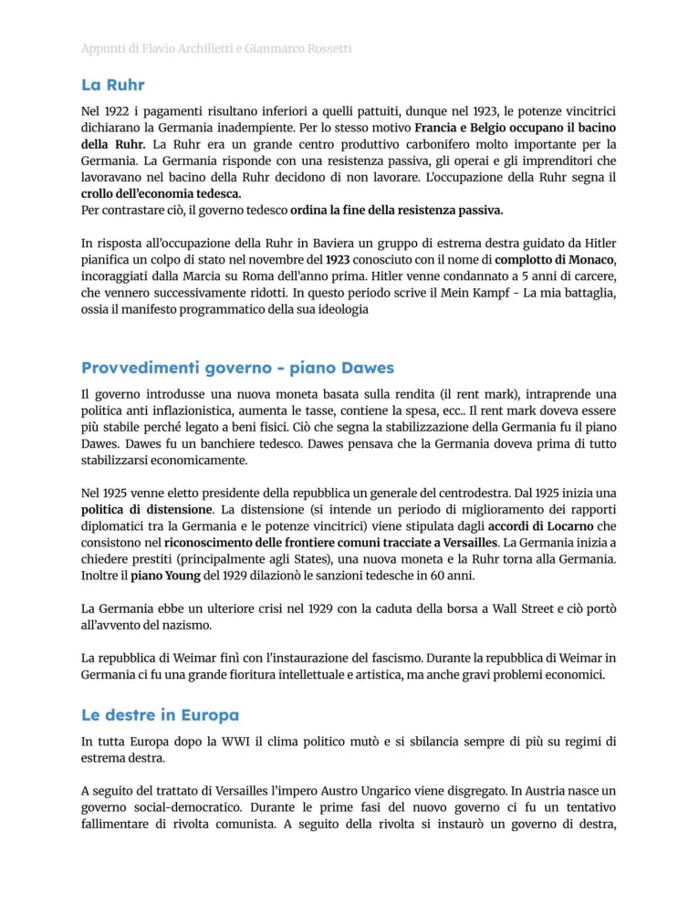
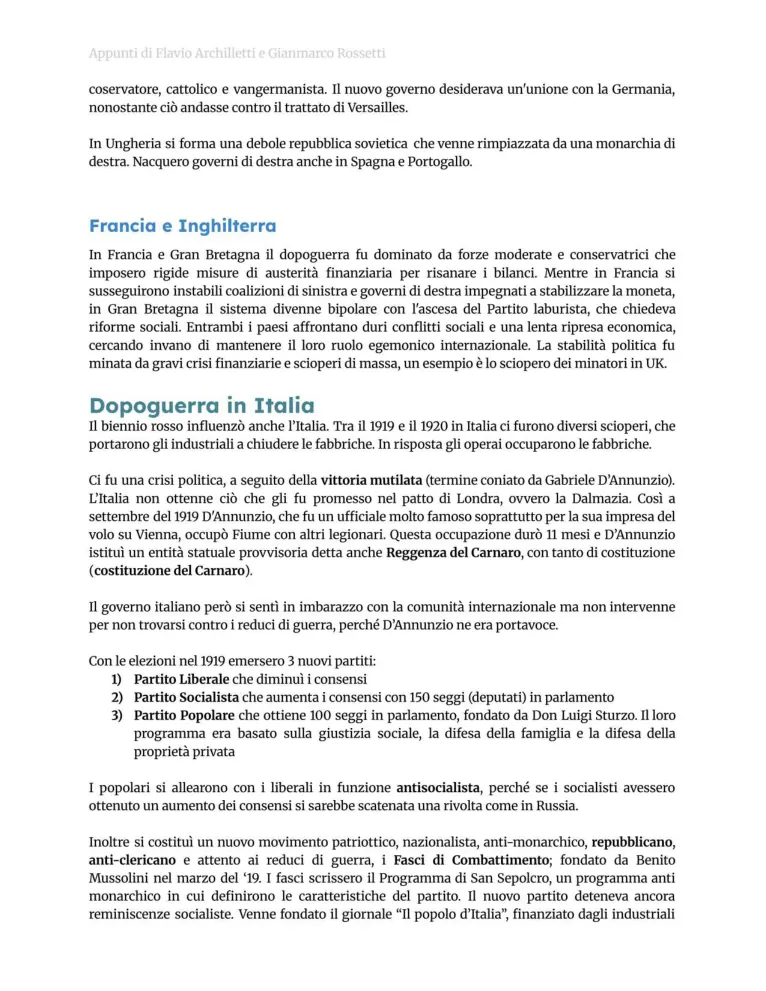
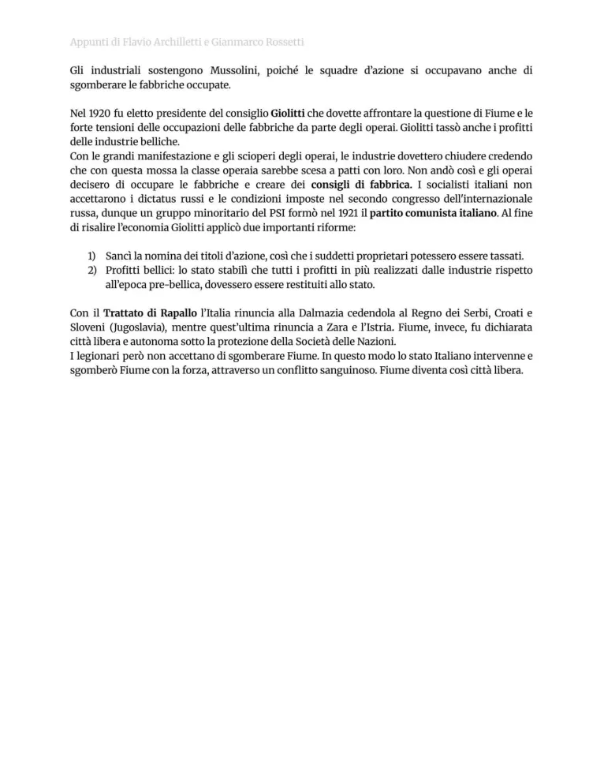

Primo dopoguerra in Europa
Crisi economica, nuovi confini, Weimar, Ruhr, piano Dawes, dopoguerra italiano e biennio rosso.
Studio guidato
Crisi postbellica
Dopo il 1918 l’Europa deve affrontare morti, debiti, inflazione, riconversione industriale, disoccupazione e tensioni sociali. Le masse entrate nella politica durante la guerra chiedono riforme e sicurezza.
Nuovi Stati e tensioni
I trattati ridisegnano l’Europa ma creano minoranze e risentimenti. La Germania vive una pace percepita come umiliante e la Repubblica di Weimar nasce in un contesto fragile.
Germania e Ruhr
La crisi economica tedesca peggiora con riparazioni, inflazione e occupazione della Ruhr da parte franco-belga nel 1923. Il piano Dawes cerca di stabilizzare pagamenti e credito internazionale.
Italia
In Italia il mito della vittoria mutilata, la questione di Fiume, l’inflazione e la paura della rivoluzione alimentano instabilità. Il biennio rosso vede scioperi, occupazioni e forte mobilitazione operaia e contadina.
Sistema politico debole
Partiti liberali, socialisti, cattolici e movimenti nazionalisti competono in un clima di sfiducia. Questa instabilità favorisce movimenti autoritari e antisocialisti.
Parole chiave
Pagine originali dal file
Le immagini sotto mantengono il riferimento diretto alle pagine del PDF usato come base del sito.






Quiz finale
Devi rispondere correttamente a tutte le 12 domande. Se ne sbagli anche solo una, il quiz si azzera e ricomincia da capo.